SpawnPool Pro in the Pool Playground sample — every frame is the real sample, the real window, or the real code, nothing staged.
The fifteen frames below walk through the package: the sample in
play beside the live dashboard, the dashboard up close, prewarm,
growth caps, delayed despawn, the preloader, the return loop,
typed pools, pool statistics, Verify Install, the sample at full
width, the dashboard under load, the measured hot path, the
lifecycle interface, and the product at a glance. Each frame is
captioned with what it shows; the
Pool Playground sample guide tours
the same features step by step, and
Dashboard & Analytics
explains every count on screen.
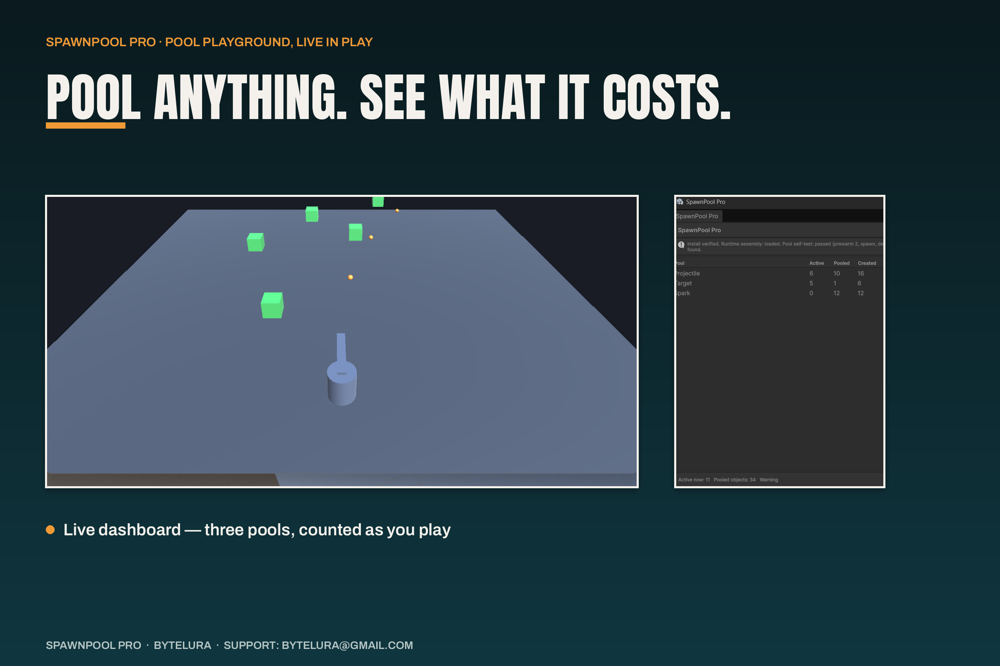
The sample in play: pooled projectiles and targets on the playfield beside the live dashboard.
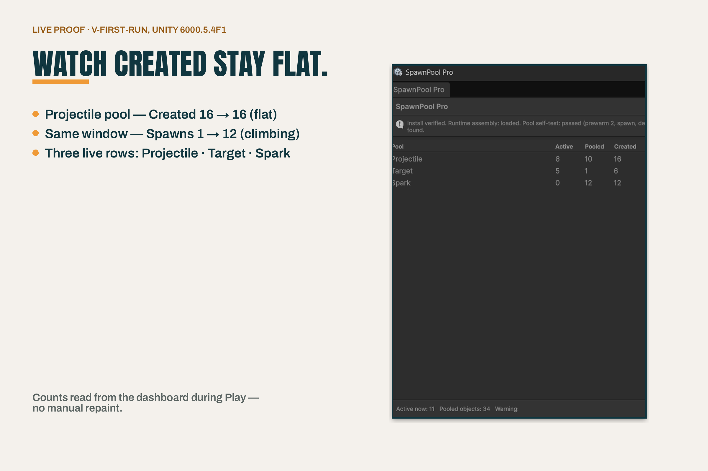
The dashboard, up close: per-pool counts — active, waiting, created — in the live window.
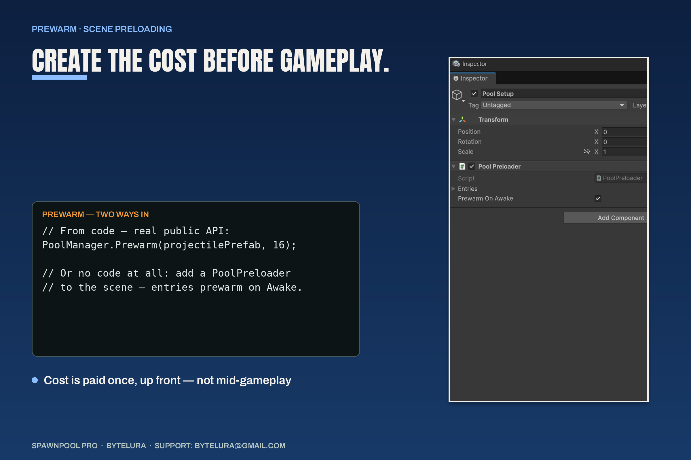
Prewarm: the PoolManager.Prewarm API as typed code beside the Inspector capture.
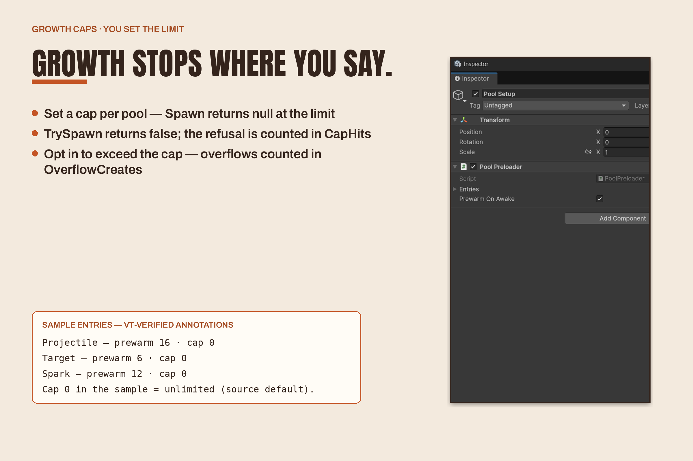
Growth caps: what happens at the cap — CapHits and OverflowCreates, in the dashboard's own words.
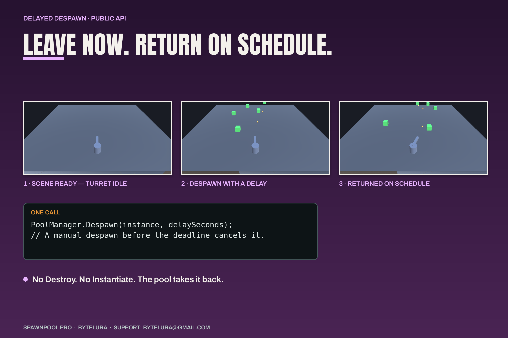
Delayed despawn: real playfield frames with the Despawn(instance, delaySeconds) call.
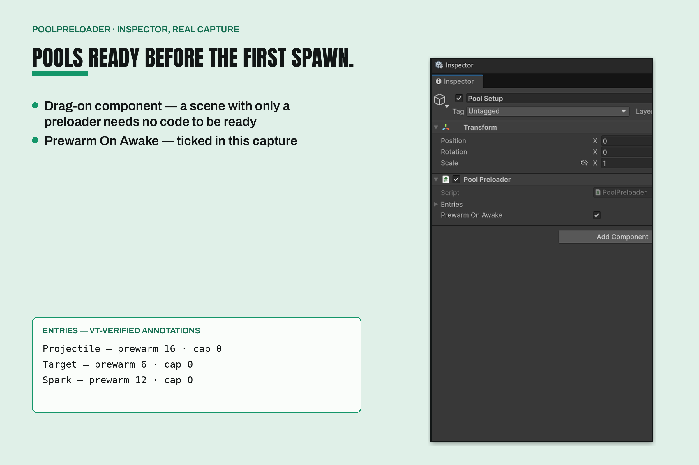
The Pool Preloader in the Inspector, set to prewarm on Awake.
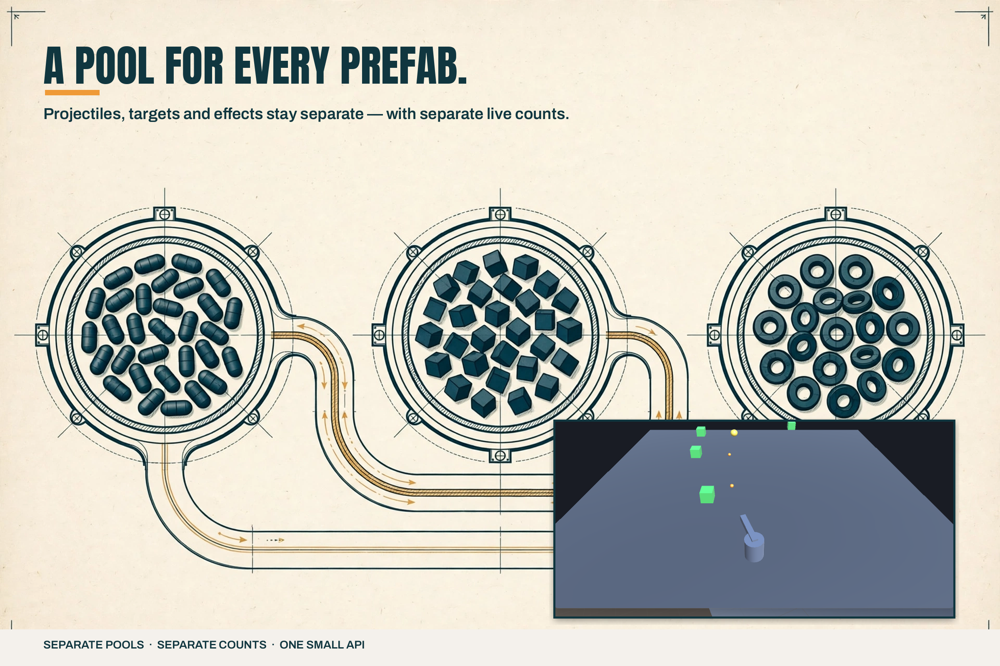
The return loop, as a diagram: three reservoirs and the path an instance takes home, with a real playfield inset.
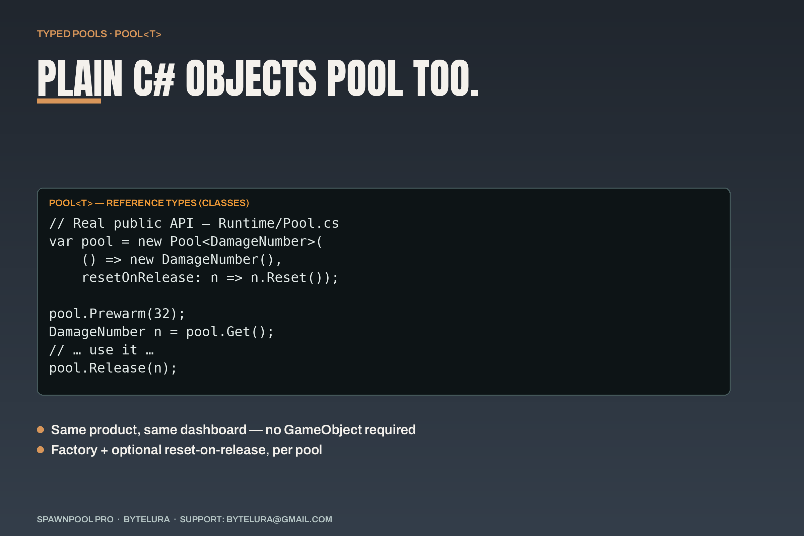
Typed pools: Pool<T> with the real constructor, Get, Release and Prewarm signatures.
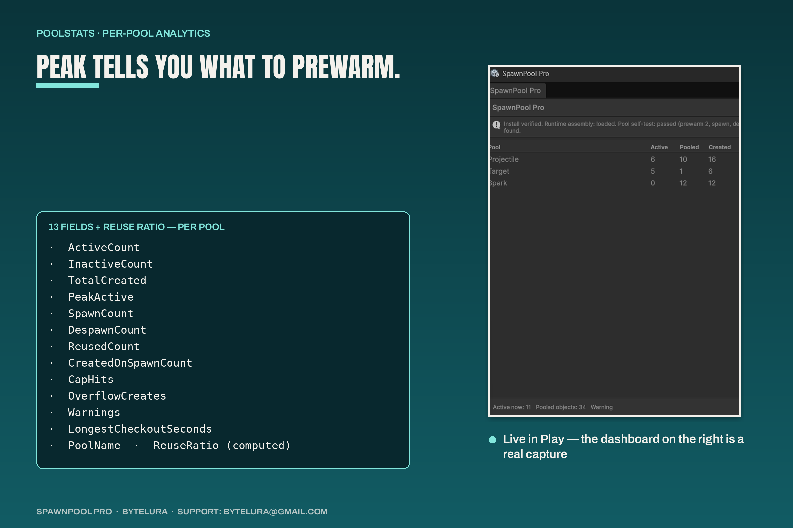
PoolStats: the full field list — thirteen fields plus the computed ReuseRatio — beside the live dashboard.
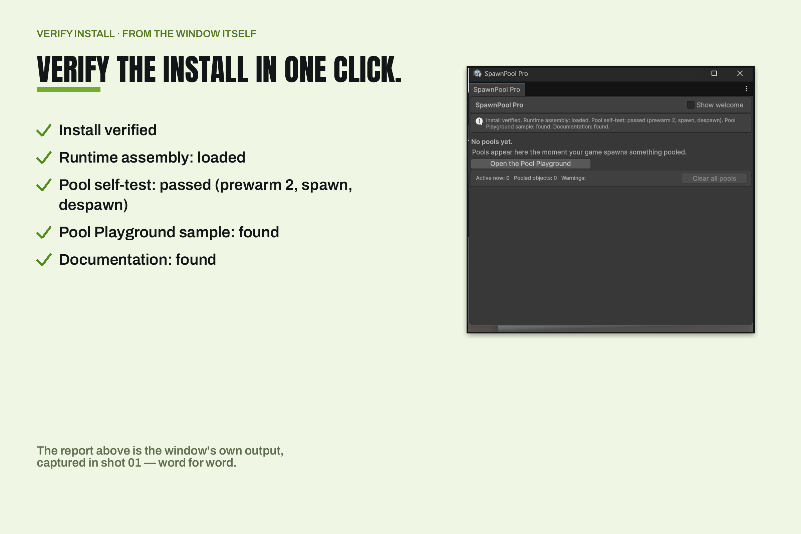
Verify Install: the window's own checklist output, word for word.
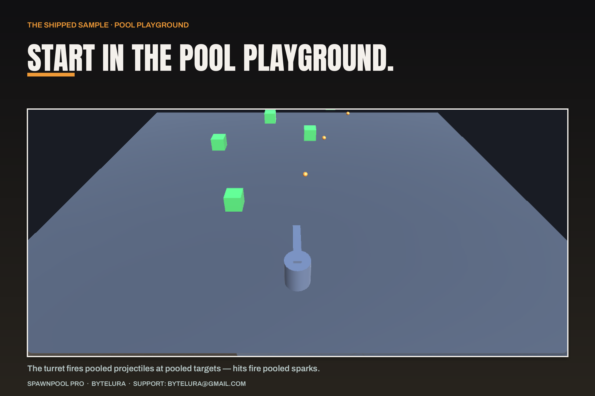
Pool Playground at full width: the turret, pooled projectiles, targets, and hit sparks.
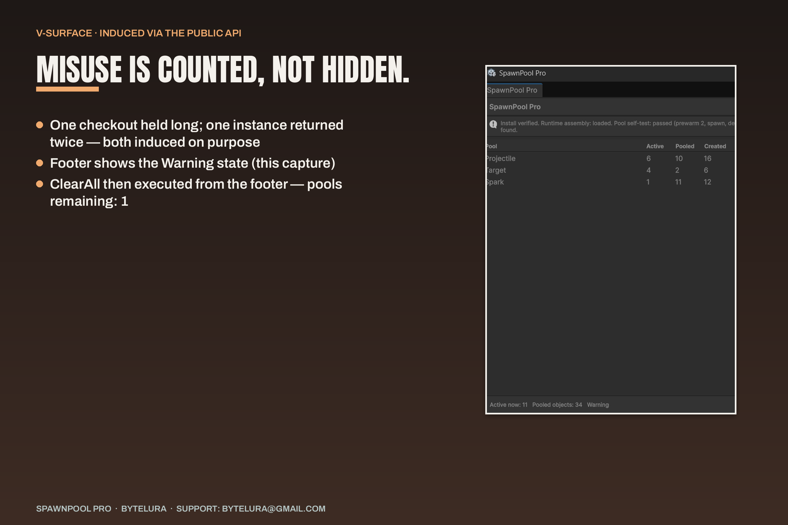
The dashboard under load: the footer Warning state and the induction the sample actually ran.
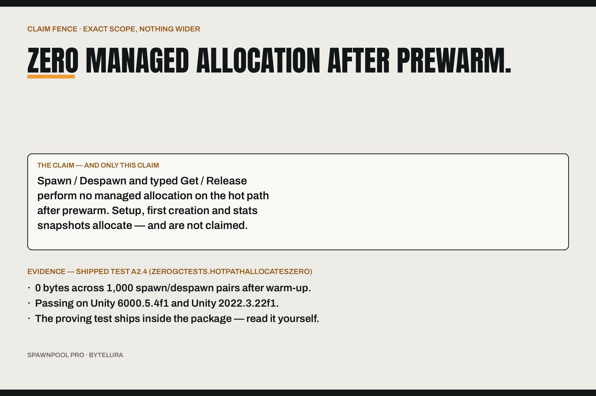
The hot path, measured: the zero-allocation scope — Spawn and Despawn plus typed Get and Release after prewarm — tested on Unity 6000.5.4f1 and 2022.3.22f1.
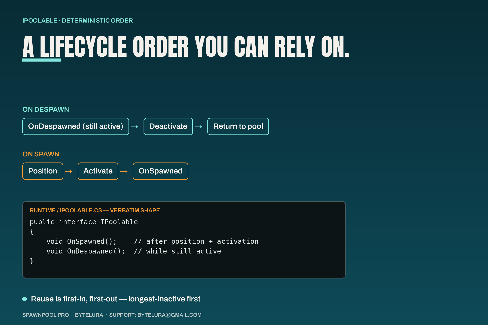
The IPoolable lifecycle: the interface's own shape, with the flows its remarks describe.
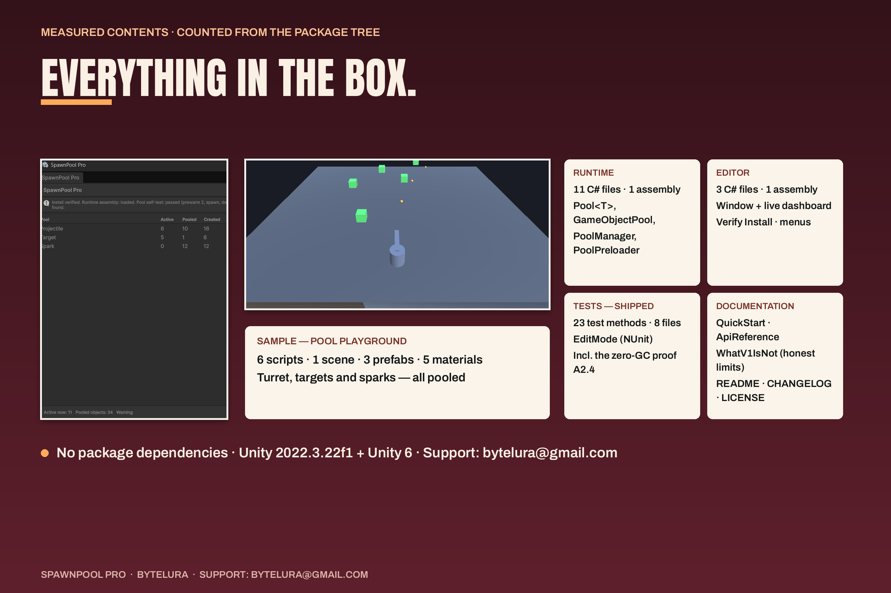
At a glance: the measured contents of the package, counted, not claimed.